This week we explored the world of 3D Scanning and 3D Printing. This weeks assignments included a group project in which we tested the design rules for the Ultimaker 2 in our lab. And then we needed to design and 3D print an object (small, few cm) that could not be made subtractively, for which I made the fabpushy and fabloop. On the 3D scanning part the assignment was to 3D scan an object and optionally to print it
I have started the week by downloading the different softwares for the scanning purpose. I had two approaches in mind; one is the photogrammetry way and the other is by using the kinect, available in our lab. So on the photogrammetry tools, I tried installing Autodesk Remake, Visual SFM, also I had SCAN3D on my android phone. Considering the fact that the photgrammetry tools uses photos, I also installed a video to image convertor virtualdub on my laptop and video 2 image app on my android phone. My idea is to shoot videos and then convert them as images so that I could get more images by converting the frames to images. On the kinect side, I installed the kinect SDK and also Reconstruct me, Skanect, KScan3D, Scene Capture. And on the mesh editing side I installed Autodesk mesh mixer, meshlab and Blender.
I brushed up few basics by going through the links discussed by Neil during his lecture and also few other reading material like wikipedia and the ebook by lmi3D offers good understanding on the basic types. Also this article lists the wide range of scanners currently available.
Mostly all 3D scanner employ Triangulation to determine the dimensions and geometry of real-world objects, i.e by understanding a limited set of angles and lengths of a triangle, mathematically we can figure out unknown values. Triangulation is used by both single camera, multiple camera (stereo-vision) devices, and also devices employing lasers etc. the distance and angles between imagers and the projected light source (laser or LED) creates a base of the triangle. The angle of the projected light returning to the imager from the surface completes a triangle where a 3D coordinate can be calculated. By applying this principle of solving triangles repetitively, a 3D representation of an object is created.
There are many types of 3D scanning technologies on the market today, from game controllers to industrially designed smart scanning devices. The most commonly used technologies fall into three categories: Displacement, Profile, and Snapshot (aka, Scanner).
Kinect is orginally a motion sensing input device by Microsoft for Xbox 360 and Xbox One video game consoles. Based around a webcam-style add-on peripheral, it enables users to control and interact with their console/computer without the need for a game controller, through a natural user interface using gestures and spoken commands. Kinect also has a system consisting of an infrared projector and camera and a special microchip that generates a grid from which the location of a nearby object in 3 dimensions can be ascertained. This 3D scanner system called Light Coding employs a variant of image-based 3D reconstruction. In our lab we have a Kinect Sensor, that could be used as the scanner. An I have tried various softwares to gather and process the Kinect to reconstruct 3D models. To enable using Kinect on Windows for scanning purposes we need to first install the drivers. The easiest way is to do it one shot is to install the Kinect SDK from Microsoft.
The first software I tried is the Kscan. Kscan3D is a Free to use program, which is the Scanner front End for the Kinect and similar sensors. We need to Capture data from multiple angles to create a complete 360 degree mesh. KScan3D can capture and align 3D meshes automatically. Once the data is captured, we can also use KScan3D to delete unneeded points, smooth data, etc. We can export final meshes in .fbx, .obj, .stl, .ply, and .asc formats from the Kscan software.
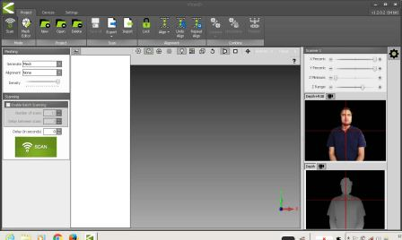
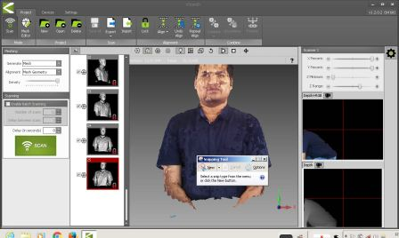
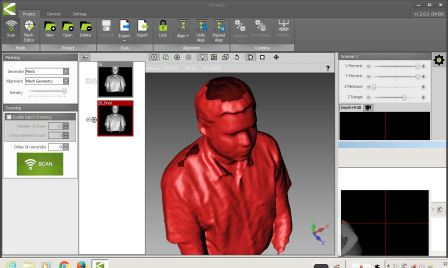
We tried scanning each other using Kscan and Kinect. Kscan was able to get good resolution. We need to ensure that the the kinect is very still, else it may lose focus. Also we noticed that Kscan was not having the ability to make water tight models on its own, so we need to do some postprocessing in a mesh editing tool. And since the sensor can't me moved while scanning, the top view parts like the the top of head could not be captured as seen in the image above.
After using Kscan, I was not able to use the other 3D scanning softwares, A little investigation showed that Kscan will install its own version of the drivers for the Kinect, which is not compatible with the other 3D scanning softwares, so we need to unistall these drivers and have the orginal kinect driver installed by reinstalling the Kinect SDK.
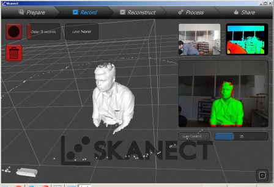
Then we need to Move slowly around the object until you have managed to capture all the data we want. The record button or spacebar could be used to start/stop recording. If the scan becomes misaligned, just need to line up the black and white image overlay with the physical data until it snaps back. Sometimes, we may have to take multiple scans to get everything. In our scan, I was moving the camera around Ajith, which did not worked well. So we ended up rotating Ajith on a rotating chair keeping the Kinect stationary.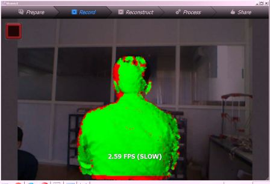
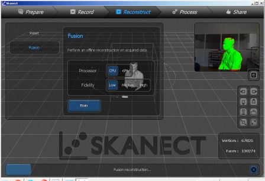
Once the capture is made all 360degrees, hit the “Stop” square to stop the recording, and move to the reconstruction and post processing phases, where we can fuse your scans together and add color andreconstruct.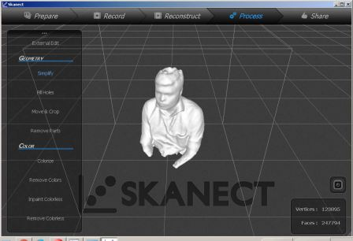
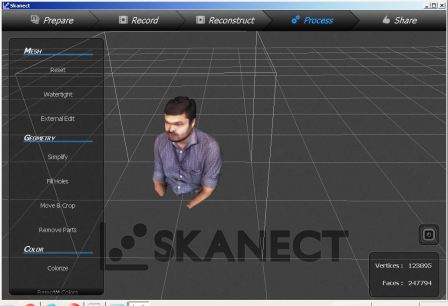
Small object Scanning - I also tried doing a smaller object; the 3DBenchy which we used to test the printer settings. I tried to change multiple settings including the bounding box etc, but still I was not able to capture a good scan, i concluded that this is because if the part is placed beyond minimum distance required by the Kinect sensor, then the software is not able to reconstruct.
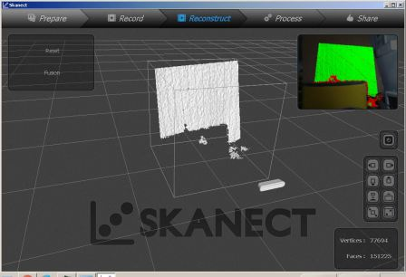
As we were having only the trial version of Skanect, we were able to export the stl only with a coarse resolution. Then using mesh mixer, I have done a bit of sculpting on the back of the head to remove hole from the default skanect reconstruction. Then I uploaded to the sketchfab account I have created.
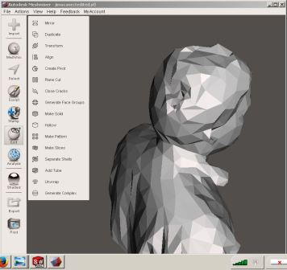
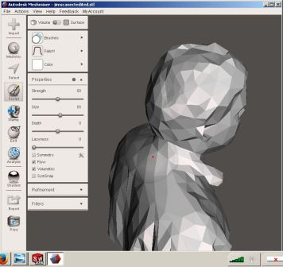
I also tried using Scene Capture from Faro, who is a market leader in professional quality 3D scanners. SCENE Capture is the application used by FARO to drive the FARO Freestyle3D sensors. In Addition, other 3D sensors including our humble Kinect are supported as well. The main task of SCENE Capture is the registration of single 3D frames to compose larger sceneries. Objects can be scanned from different sides by moving the sensor around the objects and rooms by panning and moving the sensor inside the rooms. Even though more information was captured using this tool, like multitude of points and their co-ordinates, colours etc, my humble laptop struggled a lot to cope up with the amount of data and the corresponding processing. At the end I was able to get say a million points which was exported as IGS and DXF files of the sizes of 500Mb files. Again solidworks struggled to open these files on my laptop so that I could do some editing work. So to conclude SCENE Capture is very powerful and precise for professional quality work, and need to use itonly with the right sensors and more importantly with a higher configuaration work station, and a lot of patience to remove the unwanted points and the corresponding postprocessing. But the point cloud data that we get could be used for professional grade 3D reconstruction.
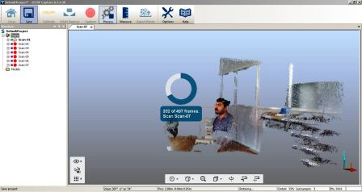
This was the most easy to use 3D scanning software that I tried, and I really liked the selfie mode. And since this is one of the most used non-commercial application, there is lot of references available on how to do the scanning properly. It is easier to get good results if we try the steps mentioned on the reconstructme website and on instrucatables.. We sat on on a rotating chair, and kept the Kinect stationary. And after starting reconstruct me we roated ourselves by pushing the feet against the floor. This technique gave fairly accurate results.
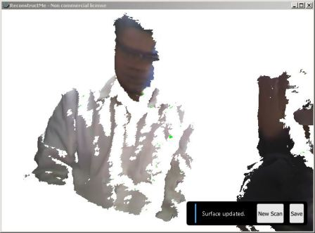
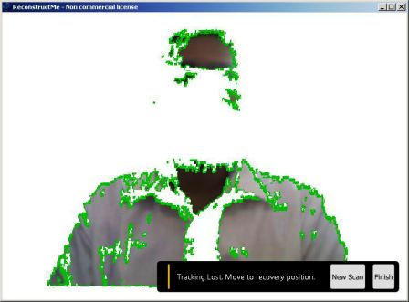
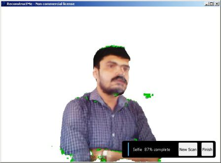
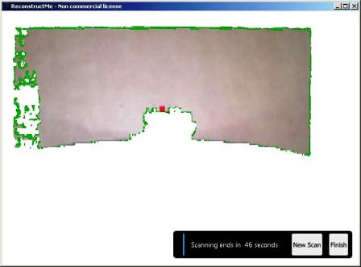
VisualSFM is a GUI application for 3D reconstruction using structure from motion (SFM).I tried to reconstruct the 3D benchy model, but was not successful. I took many photgrasphs at various orienations and tried to generate the model. I am yet to perfect my skills using this tool.
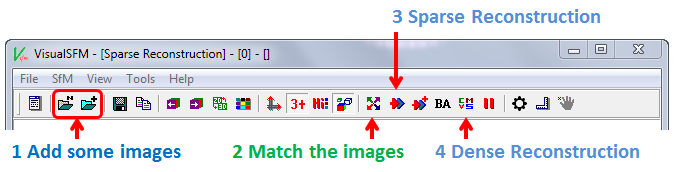
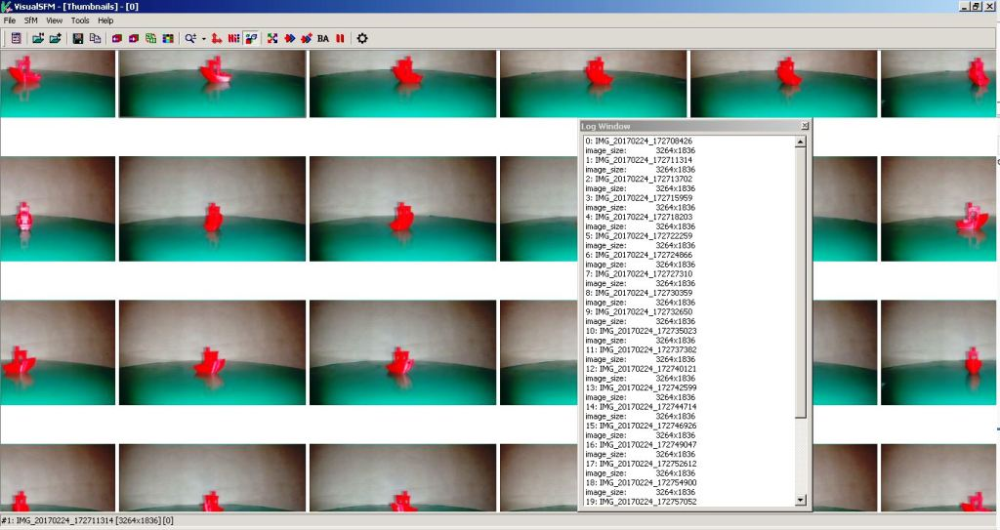
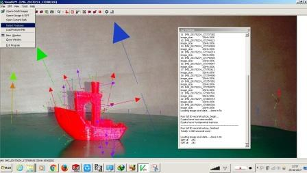
Previosly I have used 123DCatch onmy Androidphone, the fact that the processing is done on the cloud was one aspect I did not like with respect to privacy. So later I found this toolcalled Scan3D on Android, that could do the processing on the phone itself. I have done few experiments, but the lighting and focusing are yet to be perfected for creating more perfect results.
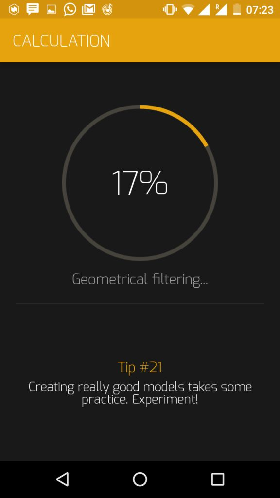
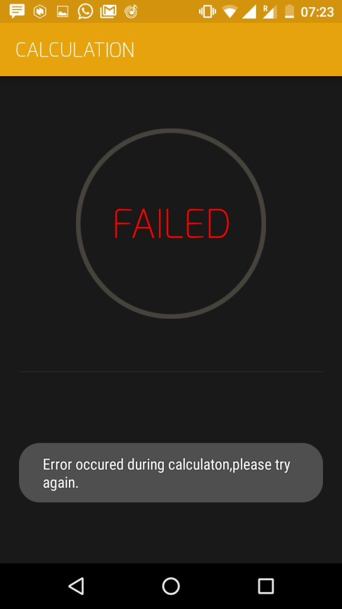
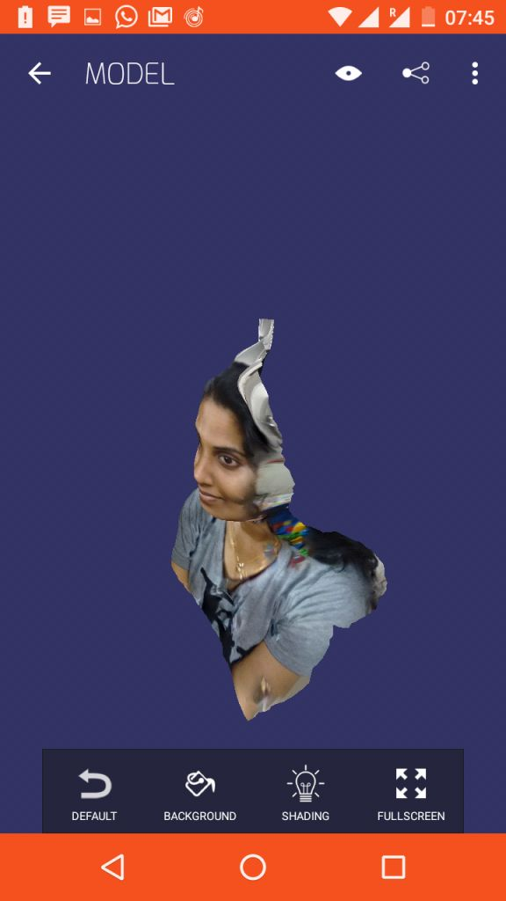
I had some prior exposure on 3D printing by buiding few DIY style printers with my collegues at work recently, so I could bit easily relate to the various terminologies and concepts in 3D printing. Also back in 2004, during my masters study I had used a now defunct Stratsys 3D printer, which almost entirely filled a small room at the AUFRG institute of CAD/CAM, at Anna University.
So I was excited to try 3D printing on the Ultimaker 2 in our lab, which is a FDM type 3D printer.
After Neil's session on the subject I went through the stratsys learning content on 3D printing. This is a well structred learning plan on 3D printing.
The common3D printer technologies could be classified into
Understanding our 3D printers limits is the most important thing because this affects the printability and the print quality of the 3D prints. We did a group activity to understand the various parameters including resolution, maximum unsupported angle etc. We have downloaded a test print model from thingiverse and is shown below with the test parameters.
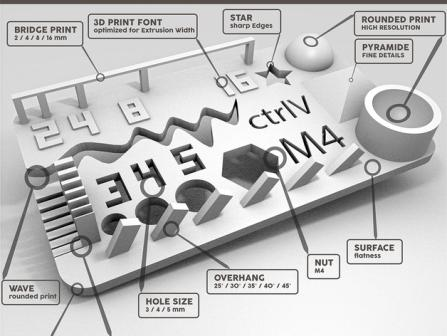
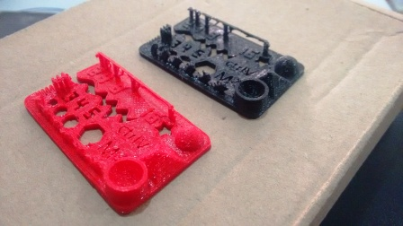
The test results are visually the model looks fairly good, the slopes and curves are printed correctly, but we could notice some defects upon closure inspection, the lettering and the slots looked good. We tried to take some measurements using a vernier caliper. Since the part is so intricate, with rough surface finish and flexible overhangs, the measurement was difficult. We tried printing it in Red as well as Black color filaments, and the results where more or less similar.
The 3DBenchyis a 3D computer model specifically designed for testing the accuracy and capabilities of 3D printers. The 3DBenchy is described by its creator, as 'the jolly 3D printing torture-test'. Various resolution models including multipart models for color printing could be downloaded from the 3DBenchy website. The shape and size of this 3D model is designed to challenge 3D printers. The dimensions of the various features of this model could be easily measured with a caliper.
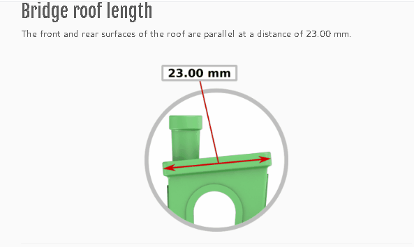
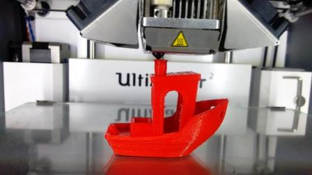
For the 3D printing assignment I used solidworks, for modelling the parts. I wanted to create a moving mechanism by 3D printing. The process followed by me for creating creating for creating the model is illustrated in the following animation. When we roll the vehicle the middle wheel is supposed to rotate due friction. This in turn moves the slider crank assembly, which moves the ball head up and down. I exported the model as a STL file from solidworks. Later I am imported this file into cura. I used the low quality profile with layer height of 0.2 mm and a fill density of 10 %. I chose these settings for a quicker print. But these settings did not give good results, also the yellow material which I used was kept open for weeks and because of that the resulting print was too brittle. Also the reduced resolution fused certain layers preventing the relative motion. As a update the part could be printed with a higher resolution and higher fill density, and also could try reorienting parts and alighning the sidewalls to be the base layer.
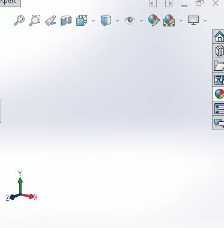
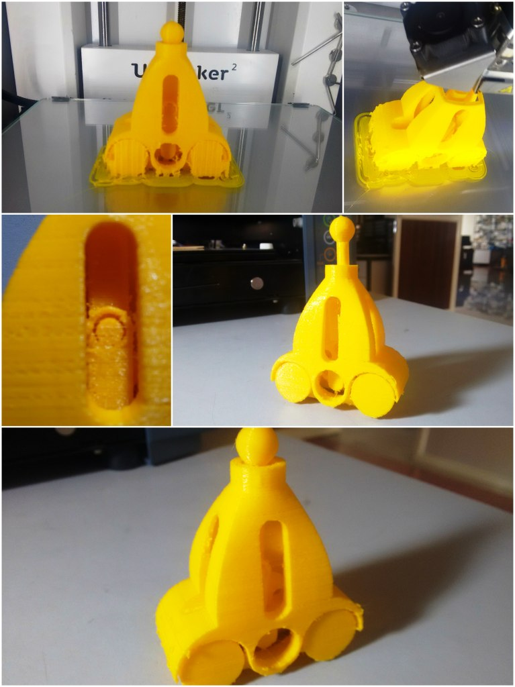
I also modelled a infinite closed loop with movable tabs. This model was also done on solidworks. I used 3Dsketch throrough the filleted edges of a cube, and then sweeped a circle using the 3Dsketch as the path. Line contact is given between the tabs, so that the tabs could be easily separated after 3D printing. Using MeshMixer, I also generated the support, which looks very different and optimum than the mesh type sdefault support on Cura. Again for quicker printing I reduced the scale, and also fill density of 10% with a layer height of 0.2mm. And due to these factors and by using the yellow material, the output came bit delicate. I should also try printing this with abot 50% fill and 0.1m layer height.
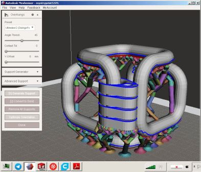
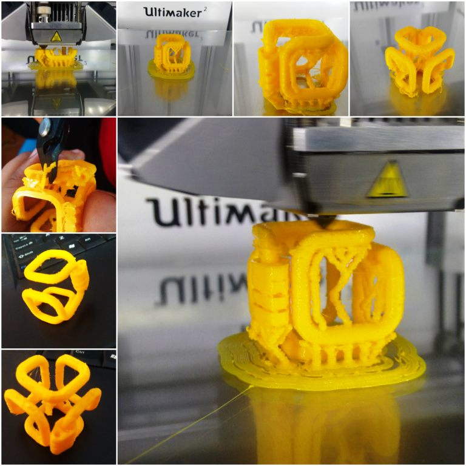
The orginal Solidworks files for fabpushy and fabloop created as part this week's assignment is available via the link below.